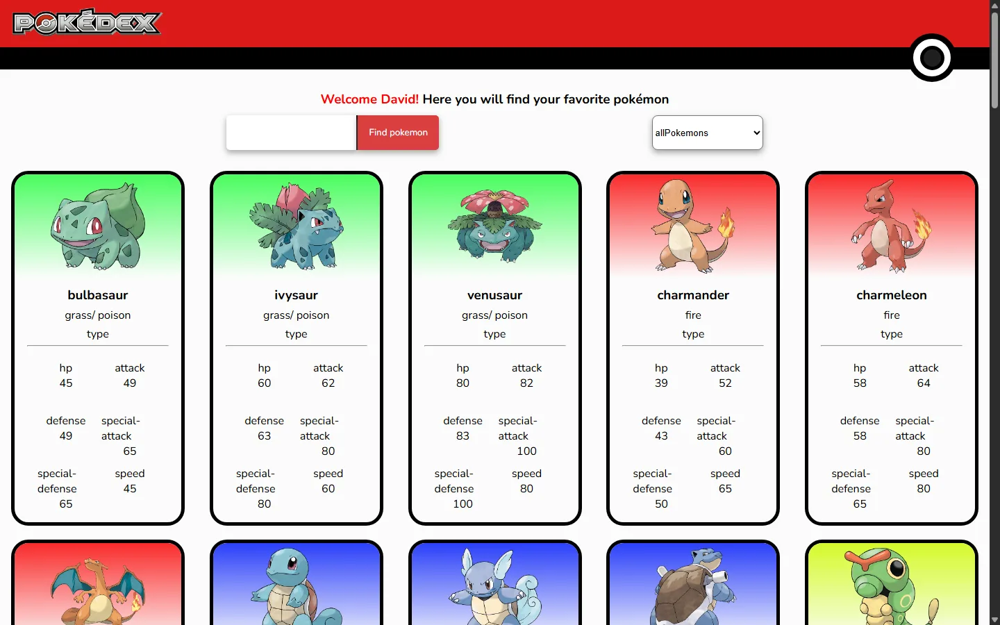
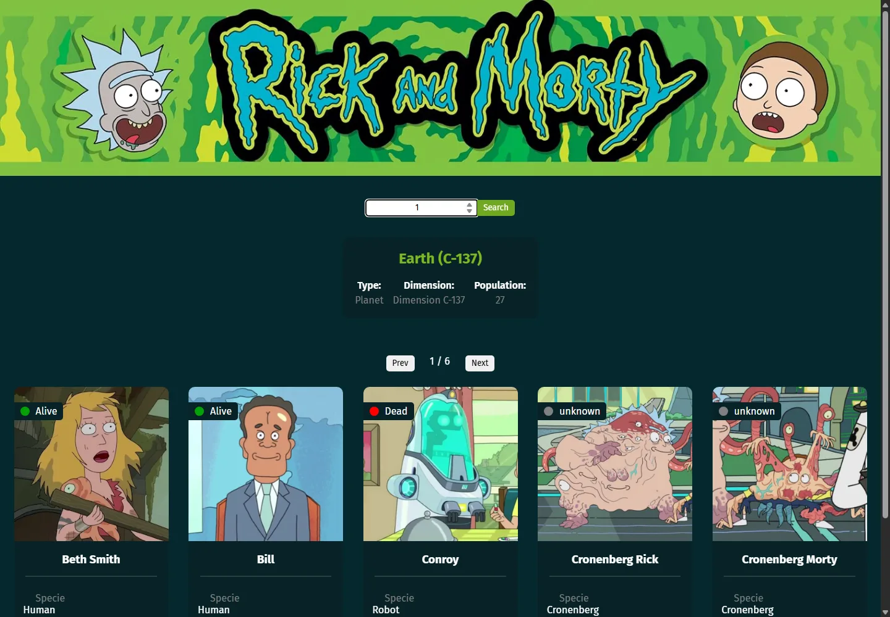
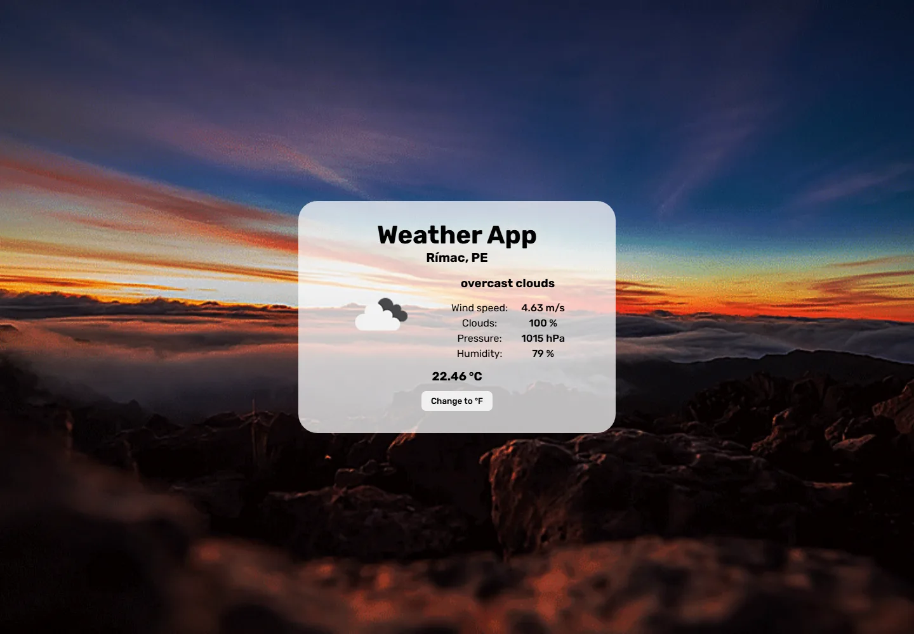

Código claro
Soluciones comprensibles, ordenadas y pensadas para evolucionar.
Hola, soy David Castillo
Soy DavidDevX, desarrollador full stack en formación. Me interesa tanto el frontend como el backend, y disfruto convertir ideas en software claro, línea por línea.
const developer = {
name: "David Castillo",
brand: "DavidDevX",
stack: [
"JavaScript", "React",
"Node.js"
],
mindset: "seguir aprendiendo"
};
function buildFuture(idea) {
return learn(idea).build();
}01 / SOBRE MÍ
Soy egresado de Ingeniería de Industrias Alimentarias por la Universidad Nacional de Frontera (2026). Llegué a la programación por curiosidad, sin planearlo, y terminó por gustarme: encontré un trabajo que disfruto, concentrado y tranquilo frente al monitor, resolviendo un problema a la vez.
Durante seis meses de formación como estudiante en Academlo aprendí y trabajé con HTML, CSS, JavaScript, React y Node.js. Actualmente también incorporo PostgreSQL a mi stack y continúo fortaleciendo esas bases a través de proyectos prácticos, tanto en frontend como en backend.
No vengo de un recorrido tecnológico tradicional, y esa es una de mis fortalezas: combino pensamiento analítico, curiosidad y una visión orientada a procesos.
Soluciones comprensibles, ordenadas y pensadas para evolucionar.
De tropezar con mis primeros hooks a resolver el estado de una app con confianza: cada proyecto suma una lección nueva.
La tecnología tiene valor cuando resuelve una necesidad real.
02 / TECNOLOGÍAS
Una base enfocada en desarrollo web, en crecimiento constante.
Estructura semántica
Diseño responsive
Interacción y lógica
Interfaces por componentes
JavaScript del lado servidor
Bases de datos relacionales
03 / PROYECTOS

Proyecto destacado 01
Explorador de ubicaciones 02
Clima por geolocalización 0304 / TRAYECTORIA
Mi recorrido combina formación en ingeniería y experiencia práctica en tecnología.
Ingeniería de Industrias Alimentarias, con formación analítica, enfoque en procesos y resolución de problemas.
Formación como estudiante en desarrollo web utilizando HTML, CSS, JavaScript, React y Node.js.
Desarrollando proyectos propios y buscando oportunidades de empleo y proyectos freelance.
05 / CONTACTO
Soy desarrollador full stack, disponible para trabajar en modalidad remota o presencial, en oportunidades de empleo o proyectos freelance. Si tienes una idea, una vacante o quieres colaborar, conversemos.
hectordavidcastillobailon@gmail.comDisponible para trabajar